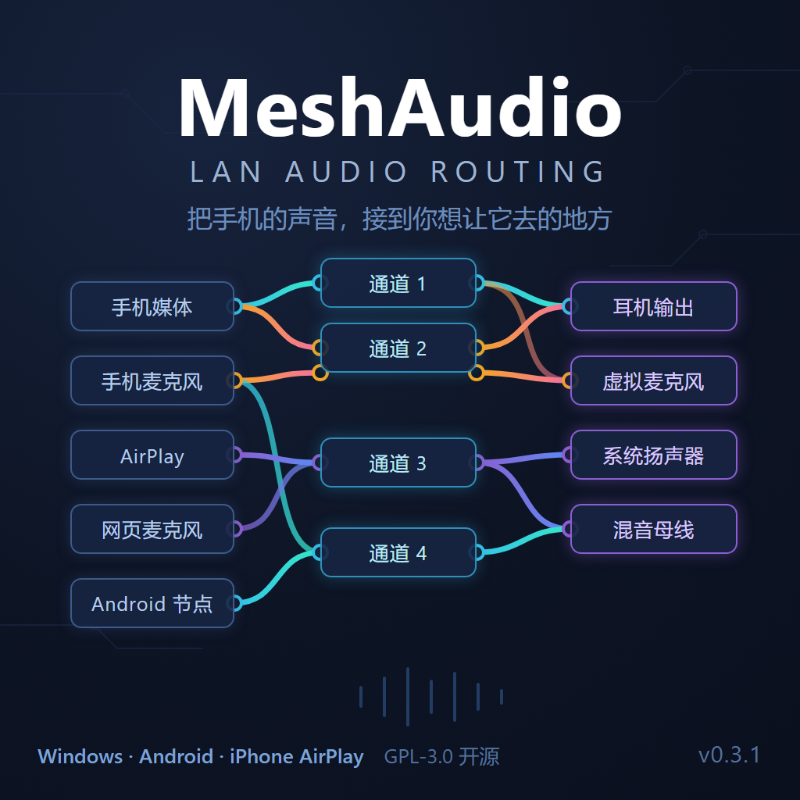

本文件 <head> 里的 META 标签就是给 QQ 分享用的卡片配置。分享卡片效果：
meshaudio-share-card.png（1024×1024，无水印、无 AI 痕迹，可自由商用）
meshaudio-share-card.png 提交到仓库 docs/ 目录（或任意可公网访问的地方）。index.html 部署到一个公网可达的 HTTPS 地址（如 GitHub Pages kingyxs.github.io/MeshAudio）。og:url 保持在 GitHub。<!-- QQ --> <meta itemprop="name" content="MeshAudio - 把手机的声音，接到你想让它去的地方"> <meta itemprop="description" content="Windows 局域网音频路由：独立手机音源、三列路由画布、混音通道与外部输出。"> <meta itemprop="image" content="https://你的图片绝对地址.png">